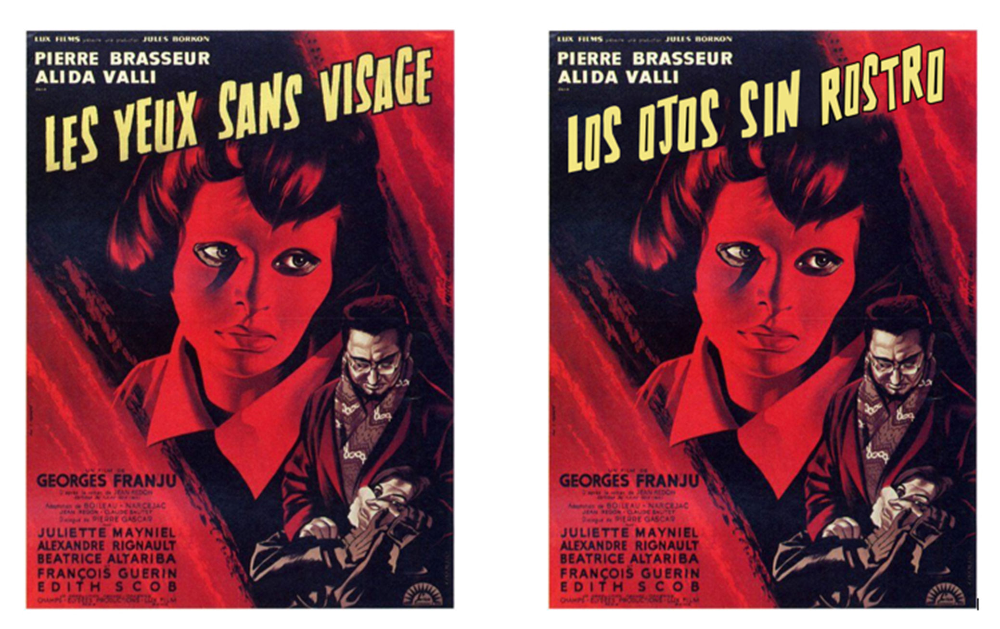

PROFESIONAL
Actualmente me encuentro cursando materias para obtener la especialidad en desarrollo tipográfico, en la licenciatura son 4 materias las que se deben cursar y solo me falta una que voy a tomar en el siguiente semestre para obtener mi diploma de especialidad.
El desarrollo de tipografías me interesa demasiado ya que es algo que usamos para comunicarnos, las formas de los trazos y el peso de la tipografía son algunos de los aspectos que se deben de tomar en cuenta al momento de transmitir un mensaje, ya que suelen existir problemas al elegir una tipografía que por sus características transmite una cosa y lo que se escribe con ella es totalmente lo contrario.
Estos son algunos de los proyectos de tipografía que he realizado:
TIPOGRAFÍA DIGITAL
CARTEL TRADUCIDO
El proyecto consistía en poner el título en español sin tener la tipografía original.
Fecha: 25 Noviembre 2020
Para: Clase de Desarrollo tipográfico 2
Logro obtenido: Aprender a identificar rasgos de tipografías para recrearlas (calificación).

ABECEDARIO VECTORIZADO
Este proyecto consistía en desarrollar una tipografía con unos trazos seleccionados por el profesor.
Fecha: 17 Junio 2021
Para: Clase de Desarrollo tipográfico 3
Logro obtenido: Aprender a crear una tipografía a partir de un trazo específico (calificación).